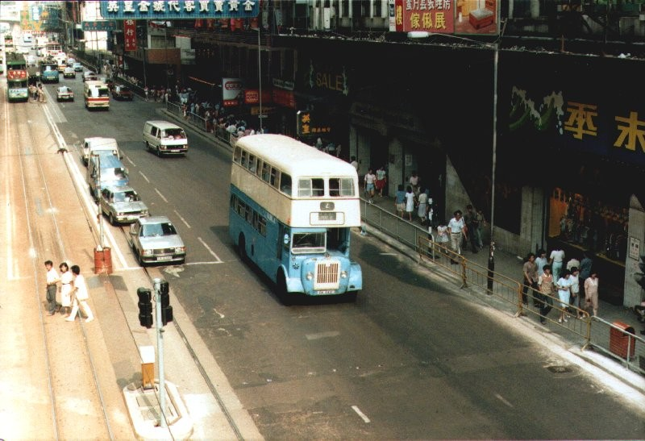

|
PD500車系----Leyland "Titan" PD3/5 中巴自製「PD6LX」 |
1983年初，政府允許中巴把車隊內車齡較高的車輛延長使用年限，直至地鐵港島線通車為止。當年，中巴正值大量12米巴士(ML)投入服務，這些12米長的巴士，載客量幾達170人，但反觀中巴車隊內仍然有大量短小的「S」、「LS」仍未退役，這些車輛除了車身老舊過時外，面對日益增長的乘客需求，這兩款巴士明顯無法應付，影響了車隊整體的運輸能力。
有見及此，在「LX200」的重建工程而達尾聲之際，中巴看準了「PD500」30呎長的車身，決定為車隊內已擱置兩年的「PD500」加以重建，重新使用，以取代長度只有28呎的「S」、「LS」。
中巴原意是把餘下16輛「PD500」進行重建，可惜因擱置太久，部份車輛狀況不甚滿意，或經已退役肢解，因此中巴唯有退而求次，選取了12輛「PD500」、2輛「PD」及印度製造的APD1進行這次大規模的重建工程。這些車輛在進行手術前，中巴先行把PD510及PD516試驗性裝上氣壓制動系統，取代原裝的液壓制動系統，成效令人滿意。
其後，中巴決定利用退役的「S」、「LS」的車身及機械組件，把這些PD進行改裝。把這次改裝工程非常徹底，改裝項目包括﹕
1.把原來「S」、「LS」使用的"Gardner"(吉拿)6LX引擎移植至這些「PD」上，取代原來的"Leyland"0.600、0.680引擎；
2.把退役的「S」、「LS」的駕駛室、車頭組件整個移植至「PD」上；
3.加裝氣壓制動系統及動力輔助轉向裝置；
4.車門開關亦改為氣壓制動，取代原來問題多多的電動開關；
5.翻新車箱內部，改換上木板靠背的中巴標準座椅，及更換車窗。
整個重建工程非常徹底，這些原來是密封式車頭的PD，一下子變成一輛半艙式巴士，機械配搭更是與車隊內的佳牌巴士無異，只是部份車輛的波箱仍然為利蘭的產品。此外，「PD」原裝的Northern Counties車身，與其剎車系統，一向為中巴司機詬病，一來駕駛室炎熱非常，二來剎車系統難以操控，這些缺點在這個翻新過程中一併消除了。

改裝後的PD523途經北角炮台山，可見原裝的Northern Counties車身，車頭卻是原自「S」、「LS」的Metal Section組件。
被中巴選取作重建的PD成員包括﹕PD11、PD33、PD501、PD502、PD503、PD505、PD506、PD508、PD510、PD518、PD523、PD525、PD526、PD527。PD501為首部改裝完成的車輛，於1983年8月重新投入服務。其中PD527是原來PD507，只是重建工程完成後，被錯誤地髹上PD527的編號，直至退役 。
至於PD11及PD33，原為較舊款的"Titan"PD3/4，因此改裝範圍較為複雜。須要把原來操作困難的
此外，由於大部份接受改裝的「PD」及「PD500」皆停牌超過兩年，按法例規定必須重新領牌，因此部份改裝後的車輛，車牌為DA、DB、DC字頭。
這些新的「PD」陸續於1983年8月至1984年5月間投入服務，仍然常見於2號線。這14輛「PD」一直使用至1986年，地鐵港島線通車後，才正式退役。PD525為最後退役的「PD」，時為1989年，退役前長期為14號線的字軌車。